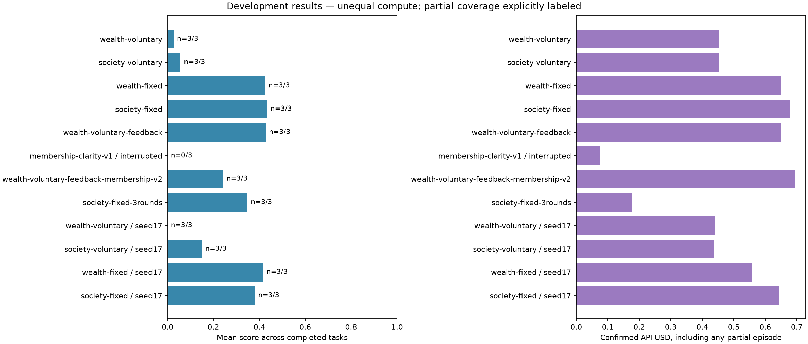
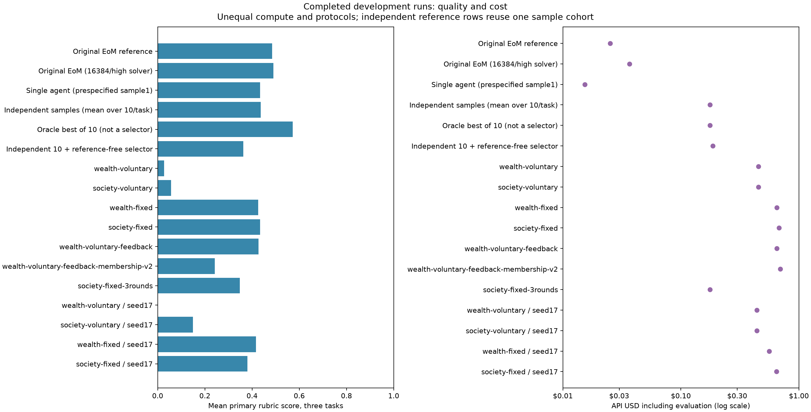
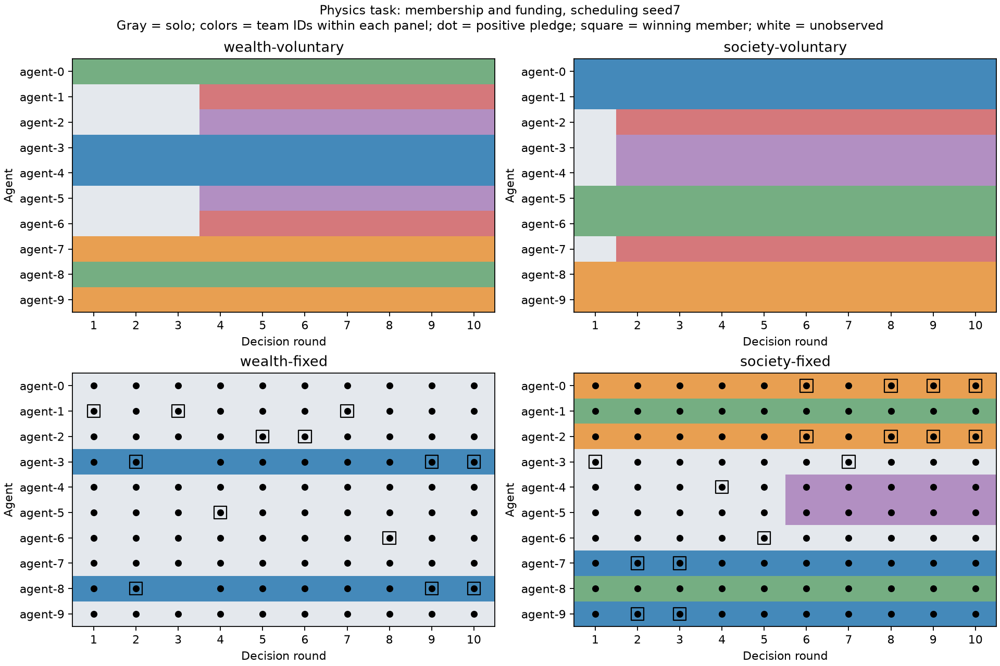
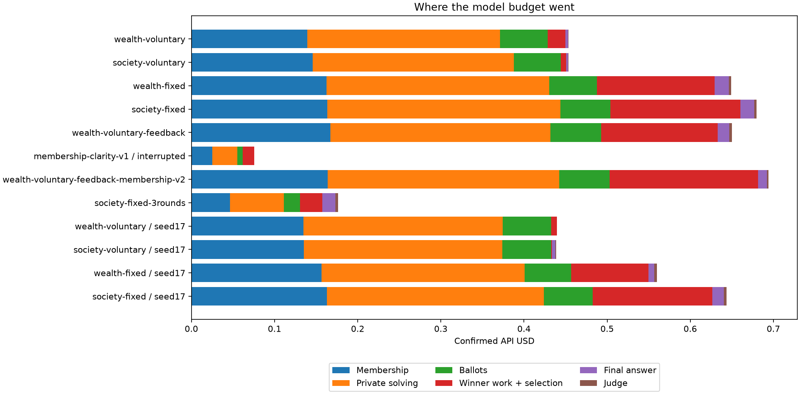

Final research report
Authorized window: 2026-10-01 20:59:10 PDT to 2026-10-01 23:59:10 PDT. Report generated: 2026-10-01 23:31:27 PDT. Latest recorded provider request started: 2026-10-01 23:17:53 PDT.
Total confirmed session spending: $6.5850; unresolved reservations: $0.0045. Maximum authorized: $100. This total includes the stopped pilot and standalone society-prompt pilot, but excludes historical research campaigns.
Main finding: fixed-price consent removed the publication stall across both tested seeds (120/120 funded rounds, 12/12 final answers), whereas voluntary bids funded 8/120 rounds and produced 3/12 answers. Factual auction feedback was a promising separate follow-up. Neither reliable funding nor more communication established a scientific-quality advantage over the original-engine references.
The report includes matched ablations, original-engine and independent-sample comparisons, repeated grading, per-agent membership timelines, dialogue replays, payment audits, and a post-hoc physics calculation. Small score differences should be treated cautiously: these are three development tasks judged by the same model family used to solve them.
The primary experiment crosses two objective prompts (individual wealth versus society success) with two bidding packages (voluntary personal amounts versus a fixed 0.1 total team bid). Each task starts with ten fresh, role-free agents; maximum team size four, ten decision rounds, λ=0, no cross-task learning, reflection, or population evolution. Scheduling seed 7 is common across conditions; model samples are stochastic and not provider-seed controlled. Additional seed17 results, if present, are reported separately.
All paid study calls used the OpenRouter model ID openai/gpt-6-luna; receipts identify OpenAI as provider. Private team discussion starts at 2048 output tokens with medium reasoning, winning work and finalization at 16384/high, and grading at 8192/medium. Control decisions use short output budgets with reasoning disabled. Initial settings and source hashes are preserved in each plan. API costs below use provider-reported receipts, including evaluation and retry charges, rather than hypothetical list-price estimates.
The tasks are the first three bundled Frontier Science research training tasks, chosen before these runs: lattice nucleon spectrum (physics), optogenetic signaling design (biology), and paclitaxel micelle formulation (chemistry). These are development tasks, not a fresh held-out set. This study does not replace training populations across all 40 tasks and evaluating the full 19-task test set.
Each round permits membership proposals and replies, private problem discussion, a team activation ballot, an auction, and public work by the winner. Finalization occurs at the fixed horizon. Every historical member of each accepted contributing round receives the full R/N at episode end; rewards are not divided by team size. Bid payments go to the previous winning team, except the first winning bid is burned. Virtual wealth and bids are not API dollars.
“Accepted contribution” means that the chosen public action was applied to the environment. Intermediate text is not independently graded for correctness or novelty. N therefore counts accepted publications, not verified useful discoveries. Only the final answer receives the scientific rubric score.
The fixed variant is more than a numerical minimum. An agent explicitly returns act=true and authorize_base_bid=true to authorize a maximum personal charge of 0.1 × bid_cost_rate if its team wins. At least a strict majority must consent and be able to afford that maximum; the actual 0.1 bid is split equally among these consenting members. Others pay zero. Eligible teams tie at 0.1 and a seeded lottery selects the winner. The voluntary variant allows yes votes with zero pledges and selects the largest positive sum. Thus the ablation tests a fixed-price consent package, not the causal effect of price alone.
Scores are native model-judge scores in [0,1]. Pass means score ≥0.5. Means use completed tasks only; interrupted episodes are not silently counted as zero. A completed episode with no answer legitimately receives zero. Funding totals include completed auctions from any currently partial episode.
| Condition | Status | Tasks | Scores P / B / C | Mean | Answers | Passes | Funded auctions | USD |
|---|---|---|---|---|---|---|---|---|
| wealth-voluntary | completed | 3/3 | 0.000, 0.000, 0.080 | 0.027 | 1/3 | 0/3 | 4/30 | $0.4535 |
| society-voluntary | completed | 3/3 | 0.000, 0.000, 0.170 | 0.057 | 1/3 | 0/3 | 2/30 | $0.4537 |
| wealth-fixed | completed | 3/3 | 0.525, 0.632, 0.120 | 0.426 | 3/3 | 2/3 | 30/30 | $0.6491 |
| society-fixed | completed | 3/3 | 0.550, 0.632, 0.120 | 0.434 | 3/3 | 2/3 | 30/30 | $0.6797 |
| wealth-voluntary-feedback | completed | 3/3 | 0.488, 0.675, 0.120 | 0.428 | 3/3 | 1/3 | 27/30 | $0.6499 |
| membership-clarity-v1 / interrupted | stopped | 0/3 | n/a | 0/0 | 0/0 | 2/3 | $0.0754 | |
| wealth-voluntary-feedback-membership-v2 | completed | 3/3 | 0.475, 0.250, 0.000 | 0.242 | 2/3 | 0/3 | 24/30 | $0.6942 |
| society-fixed-3rounds | completed | 3/3 | 0.375, 0.550, 0.120 | 0.348 | 3/3 | 1/3 | 9/9 | $0.1766 |
| wealth-voluntary / seed17 | completed | 3/3 | 0.000, 0.000, 0.000 | 0.000 | 0/3 | 0/3 | 1/30 | $0.4396 |
| society-voluntary / seed17 | completed | 3/3 | 0.450, 0.000, 0.000 | 0.150 | 1/3 | 0/3 | 1/30 | $0.4388 |
| wealth-fixed / seed17 | completed | 3/3 | 0.450, 0.639, 0.160 | 0.416 | 3/3 | 1/3 | 30/30 | $0.5600 |
| society-fixed / seed17 | completed | 3/3 | 0.425, 0.595, 0.120 | 0.380 | 3/3 | 1/3 | 30/30 | $0.6435 |

Positive differences favor the condition named first. These are descriptive score differences for tasks completed in all four cells of the corresponding scheduling seed. They are not significance tests; repeating a task with another seed does not create a new independent benchmark task. End-to-end score differences include failures to submit an answer.
| Seed | Task | Fixed − voluntary: wealth | Fixed − voluntary: society | Society − wealth: voluntary | Society − wealth: fixed | Interaction |
|---|---|---|---|---|---|---|
| 7 | d3acd2cb-8477-4630-b8bb-b4bc22670dc8 | 0.525 | 0.550 | 0.000 | 0.025 | 0.025 |
| 7 | 30a44280-a888-42bf-913a-208aa47c8772 | 0.632 | 0.632 | 0.000 | 0.000 | 0.000 |
| 7 | 7c94f50a-0896-450f-8d55-00c98aca5158 | 0.040 | -0.050 | 0.090 | 0.000 | -0.090 |
| 17 | d3acd2cb-8477-4630-b8bb-b4bc22670dc8 | 0.450 | -0.025 | 0.450 | -0.025 | -0.475 |
| 17 | 30a44280-a888-42bf-913a-208aa47c8772 | 0.639 | 0.595 | 0.000 | -0.044 | -0.044 |
| 17 | 7c94f50a-0896-450f-8d55-00c98aca5158 | 0.160 | 0.120 | 0.000 | -0.040 | -0.040 |
The original reference uses the unchanged HayekMAS engine and five upstream research roles instantiated twice, with fresh untrained populations in evaluation mode. Native individual fixed bids, wakeups, and early finalization remain. It uses 8192 output tokens with medium reasoning versus 16384/high for team work, so it is a reference, not a compute-matched causal comparison. Its economics are frozen in evaluation, whereas team economics operate within each disposable episode.
A separately declared follow-up repeats all three original-reference tasks with 16384/high solving, matching the team solver cap and reasoning setting. Wakeup and grading settings remain unchanged. This removes that settings difference, but original roles, early stopping, evaluation economics, and total compute still differ. Its answers also receive two separate repeat grades.
Inspect the executed original-engine actions in the original reference replay and matched-solver reference replay. These show public actions rather than team formation, because the original engine has individual agents and predefined roles.
| Reference | Scores P / B / C | Mean | USD including evaluation |
|---|---|---|---|
| Original EoM reference | 0.650, 0.605, 0.200 | 0.485 | $0.02514 |
| Original EoM (16384/high solver) | 0.800, 0.550, 0.120 | 0.490 | $0.03676 |
| Single agent (prespecified sample1) | 0.575, 0.605, 0.120 | 0.433 | $0.01534 |
| Independent samples (mean over 10/task) | 0.538, 0.626, 0.144 | 0.436 | $0.17603 |
| Oracle best of 10 (not a selector) | 0.778, 0.737, 0.200 | 0.572 | $0.17603 |
| Independent 10 + reference-free selector | 0.325, 0.579, 0.185 | 0.363 | $0.18668 |
These rows reuse the same independent sample cohort and are not additional spending. Sample1 costs cover only those three answers and their grades. Independent mean and oracle costs cover all thirty answers and grades. Selector costs additionally include the reference-free selection calls. An oracle score is an analysis using the grades, not an executable answer-selection system.

| Task | Score | Steps | USD |
|---|---|---|---|
| d3acd2cb-8477-4630-b8bb-b4bc22670dc8 | 0.650 | 4 | $0.0123 |
| 30a44280-a888-42bf-913a-208aa47c8772 | 0.605 | 6 | $0.0094 |
| 7c94f50a-0896-450f-8d55-00c98aca5158 | 0.200 | 2 | $0.0034 |
The independent baseline generates ten separate answers per task at 16384/high, without communication or access to other answers. Sample1 is the prespecified single-agent result. Pass@k is 1 − C(n−c,k)/C(n,k), where c is the number of judge-passing samples among n completed samples. This is an oracle success estimate, not a working selector, and judge calls are included in cost.
Here sampling k is the number of answers considered, distinct from the population size k=10. With n=k=10, pass@10 is zero or one according to whether this one batch contains a passing answer; it does not establish a 100% success probability for future batches. Each independent sample received one grade. The separate repeated-grading checks apply to the declared team and original-reference answers, not all thirty independent samples.
| Task | Samples | First-sample score | Mean score | Best score | Pass@1 | Pass@3 | Pass@5 | Pass@10 |
|---|---|---|---|---|---|---|---|---|
| d3acd2cb-8477-4630-b8bb-b4bc22670dc8 | 10 | 0.575 | 0.538 | 0.778 | 0.700 | 0.992 | 1.000 | 1.000 |
| 30a44280-a888-42bf-913a-208aa47c8772 | 10 | 0.605 | 0.626 | 0.737 | 1.000 | 1.000 | 1.000 | 1.000 |
| 7c94f50a-0896-450f-8d55-00c98aca5158 | 10 | 0.120 | 0.144 | 0.200 | 0.000 | 0.000 | 0.000 | 0.000 |
A score of 0.5 represents partial rubric credit, not a fully correct scientific solution. The stricter thresholds below help avoid equating this operational pass criterion with correctness.
| Task | Threshold | Passing / samples | Pass@1 | Pass@3 | Pass@5 | Pass@10 |
|---|---|---|---|---|---|---|
| d3acd2cb-8477-4630-b8bb-b4bc22670dc8 | 0.5 | 7/10 | 0.700 | 0.992 | 1.000 | 1.000 |
| d3acd2cb-8477-4630-b8bb-b4bc22670dc8 | 0.8 | 0/10 | 0.000 | 0.000 | 0.000 | 0.000 |
| d3acd2cb-8477-4630-b8bb-b4bc22670dc8 | 1.0 | 0/10 | 0.000 | 0.000 | 0.000 | 0.000 |
| 30a44280-a888-42bf-913a-208aa47c8772 | 0.5 | 10/10 | 1.000 | 1.000 | 1.000 | 1.000 |
| 30a44280-a888-42bf-913a-208aa47c8772 | 0.8 | 0/10 | 0.000 | 0.000 | 0.000 | 0.000 |
| 30a44280-a888-42bf-913a-208aa47c8772 | 1.0 | 0/10 | 0.000 | 0.000 | 0.000 | 0.000 |
| 7c94f50a-0896-450f-8d55-00c98aca5158 | 0.5 | 0/10 | 0.000 | 0.000 | 0.000 | 0.000 |
| 7c94f50a-0896-450f-8d55-00c98aca5158 | 0.8 | 0/10 | 0.000 | 0.000 | 0.000 | 0.000 |
| 7c94f50a-0896-450f-8d55-00c98aca5158 | 1.0 | 0/10 | 0.000 | 0.000 | 0.000 | 0.000 |
A separate selector sees the problem and ten shuffled candidate answers, but no rubric or scores. Its chosen answer keeps its previously recorded grade. This is a deployable selection procedure, unlike oracle best-of-ten, although it is not a fresh efficacy test.
| Task | Selected sample | Previously recorded score | Selection reason |
|---|---|---|---|
| d3acd2cb-8477-4630-b8bb-b4bc22670dc8 | 4 | 0.325 | It gives the exact finite-lattice matching for t, the correct numerical energy, and explicit singlet states with relevant normalization and isospin caveats. It also correctly distinguishes the thermodynamic and continuum limits, derives the regulator-dependent coupling condition, and explains why discrete excited-state energies and degeneracies are undefined in infinite volume. |
| 30a44280-a888-42bf-913a-208aa47c8772 | 3 | 0.579 | It combines accurate pathway logic—including the distinction between Keap1–Nrf2 binding and productive ubiquitination—with more than six optogenetic options, a broad target-by-target account of effects, explicit gain- and loss-of-function designs, quantitative rationale, and thoughtful homeostasis, feedback, and validation considerations. |
| 7c94f50a-0896-450f-8d55-00c98aca5158 | 6 | 0.185 | It gives appropriately conditional explanations for the process changes, correctly states that DLS peak counts and sizes cannot be inferred without measurements, and distinguishes measured hydrodynamic diameters from calculated spherical-equivalent volumes. Its omissions list is comprehensive and includes the important point that 0.22 µm filtration does not separate dissolved free paclitaxel from micelle-associated drug. |
Each available primary, feedback, and original-reference answer is graded twice more with the same grading prompt and settings. A later declared extension covers all seed17, corrected membership-clarification, and three-round answers; that extension was decided after seeing seed17 physics results, not prospectively with the primary protocol. Primary grades stay unchanged. Ranges describe grading variation, not confidence intervals; zero-answer cases require no judge call.
Among 29 submitted answers with two valid repeat grades, the median score range is 0.078 and the largest range is 0.350. Grade variation crosses the 0.5 threshold for 7 answers and the 0.8 threshold for 1 answers.
| Study / condition / task | Primary | Repeat scores | Range |
|---|---|---|---|
| k10-original-reference-20261001/01-d3acd2cb-8477-4630-b8bb-b4bc22670dc8 | 0.650 | 0.600, 0.550 | 0.550–0.650 |
| k10-original-reference-20261001/02-30a44280-a888-42bf-913a-208aa47c8772 | 0.605 | 0.611, 0.579 | 0.579–0.611 |
| k10-original-reference-20261001/03-7c94f50a-0896-450f-8d55-00c98aca5158 | 0.200 | 0.200, 0.200 | 0.200–0.200 |
| k10-ablation-3h-20261001/society-voluntary/01-d3acd2cb-8477-4630-b8bb-b4bc22670dc8 | 0.000 | 0.000, 0.000 | 0.000–0.000 |
| k10-ablation-3h-20261001/wealth-voluntary/01-d3acd2cb-8477-4630-b8bb-b4bc22670dc8 | 0.000 | 0.000, 0.000 | 0.000–0.000 |
| k10-ablation-3h-20261001/wealth-fixed/01-d3acd2cb-8477-4630-b8bb-b4bc22670dc8 | 0.525 | 0.675, 0.450 | 0.450–0.675 |
| k10-ablation-3h-20261001/society-fixed/01-d3acd2cb-8477-4630-b8bb-b4bc22670dc8 | 0.550 | 0.600, 0.650 | 0.550–0.650 |
| k10-ablation-3h-20261001/society-voluntary/02-30a44280-a888-42bf-913a-208aa47c8772 | 0.000 | 0.000, 0.000 | 0.000–0.000 |
| k10-feedback-3h-20261001/wealth-voluntary-feedback/01-d3acd2cb-8477-4630-b8bb-b4bc22670dc8 | 0.488 | 0.575, 0.350 | 0.350–0.575 |
| k10-ablation-3h-20261001/wealth-voluntary/02-30a44280-a888-42bf-913a-208aa47c8772 | 0.000 | 0.000, 0.000 | 0.000–0.000 |
| k10-ablation-3h-20261001/wealth-fixed/02-30a44280-a888-42bf-913a-208aa47c8772 | 0.632 | 0.526, 0.579 | 0.526–0.632 |
| k10-ablation-3h-20261001/society-voluntary/03-7c94f50a-0896-450f-8d55-00c98aca5158 | 0.170 | 0.120, 0.120 | 0.120–0.170 |
| k10-ablation-3h-20261001/society-fixed/02-30a44280-a888-42bf-913a-208aa47c8772 | 0.632 | 0.589, 0.667 | 0.589–0.667 |
| k10-ablation-3h-20261001/wealth-voluntary/03-7c94f50a-0896-450f-8d55-00c98aca5158 | 0.080 | 0.120, 0.140 | 0.080–0.140 |
| k10-feedback-3h-20261001/wealth-voluntary-feedback/02-30a44280-a888-42bf-913a-208aa47c8772 | 0.675 | 0.526, 0.474 | 0.474–0.675 |
| k10-ablation-3h-20261001/wealth-fixed/03-7c94f50a-0896-450f-8d55-00c98aca5158 | 0.120 | 0.160, 0.160 | 0.120–0.160 |
| k10-ablation-3h-20261001/society-fixed/03-7c94f50a-0896-450f-8d55-00c98aca5158 | 0.120 | 0.120, 0.120 | 0.120–0.120 |
| k10-feedback-3h-20261001/wealth-voluntary-feedback/03-7c94f50a-0896-450f-8d55-00c98aca5158 | 0.120 | 0.120, 0.120 | 0.120–0.120 |
| k10-ablation-seed17-20261001/wealth-voluntary/01-d3acd2cb-8477-4630-b8bb-b4bc22670dc8 | 0.000 | 0.000, 0.000 | 0.000–0.000 |
| k10-ablation-seed17-20261001/society-voluntary/01-d3acd2cb-8477-4630-b8bb-b4bc22670dc8 | 0.450 | 0.350, 0.450 | 0.350–0.450 |
| k10-ablation-seed17-20261001/wealth-fixed/01-d3acd2cb-8477-4630-b8bb-b4bc22670dc8 | 0.450 | 0.450, 0.500 | 0.450–0.500 |
| k10-ablation-seed17-20261001/society-fixed/01-d3acd2cb-8477-4630-b8bb-b4bc22670dc8 | 0.425 | 0.235, 0.575 | 0.235–0.575 |
| k10-short-rounds-20261001/society-fixed-3rounds/01-d3acd2cb-8477-4630-b8bb-b4bc22670dc8 | 0.375 | 0.213, 0.300 | 0.213–0.375 |
| k10-short-rounds-20261001/society-fixed-3rounds/02-30a44280-a888-42bf-913a-208aa47c8772 | 0.550 | 0.625, 0.526 | 0.526–0.625 |
| k10-short-rounds-20261001/society-fixed-3rounds/03-7c94f50a-0896-450f-8d55-00c98aca5158 | 0.120 | 0.120, 0.170 | 0.120–0.170 |
| k10-ablation-seed17-20261001/wealth-voluntary/02-30a44280-a888-42bf-913a-208aa47c8772 | 0.000 | 0.000, 0.000 | 0.000–0.000 |
| k10-ablation-seed17-20261001/society-voluntary/02-30a44280-a888-42bf-913a-208aa47c8772 | 0.000 | 0.000, 0.000 | 0.000–0.000 |
| k10-membership-clarity-v2-20261001/wealth-voluntary-feedback-membership/01-d3acd2cb-8477-4630-b8bb-b4bc22670dc8 | 0.475 | 0.625, 0.444 | 0.444–0.625 |
| k10-ablation-seed17-20261001/wealth-fixed/02-30a44280-a888-42bf-913a-208aa47c8772 | 0.639 | 0.611, 0.632 | 0.611–0.639 |
| k10-ablation-seed17-20261001/wealth-voluntary/03-7c94f50a-0896-450f-8d55-00c98aca5158 | 0.000 | 0.000, 0.000 | 0.000–0.000 |
| k10-ablation-seed17-20261001/society-fixed/02-30a44280-a888-42bf-913a-208aa47c8772 | 0.595 | 0.579, 0.579 | 0.579–0.595 |
| k10-ablation-seed17-20261001/society-voluntary/03-7c94f50a-0896-450f-8d55-00c98aca5158 | 0.000 | 0.000, 0.000 | 0.000–0.000 |
| k10-ablation-seed17-20261001/wealth-fixed/03-7c94f50a-0896-450f-8d55-00c98aca5158 | 0.160 | 0.160, 0.160 | 0.160–0.160 |
| k10-membership-clarity-v2-20261001/wealth-voluntary-feedback-membership/02-30a44280-a888-42bf-913a-208aa47c8772 | 0.250 | 0.600, 0.450 | 0.250–0.600 |
| k10-ablation-seed17-20261001/society-fixed/03-7c94f50a-0896-450f-8d55-00c98aca5158 | 0.120 | 0.120, 0.120 | 0.120–0.120 |
| k10-membership-clarity-v2-20261001/wealth-voluntary-feedback-membership/03-7c94f50a-0896-450f-8d55-00c98aca5158 | 0.000 | 0.000, 0.000 | 0.000–0.000 |
| k10-original-high-reference-20261001/01-d3acd2cb-8477-4630-b8bb-b4bc22670dc8 | 0.800 | 0.675, 0.675 | 0.675–0.800 |
| k10-original-high-reference-20261001/02-30a44280-a888-42bf-913a-208aa47c8772 | 0.550 | 0.500, 0.600 | 0.500–0.600 |
| k10-original-high-reference-20261001/03-7c94f50a-0896-450f-8d55-00c98aca5158 | 0.120 | 0.120, 0.120 | 0.120–0.120 |

Additional membership timelines: biology, seed7 · chemistry, seed7 · physics, seed17 · biology, seed17 · chemistry, seed17. White cells denote rounds not yet observed. Full dialogue appears in each task’s replay.
| Condition | Accepted invitations | Leaves | Winning team sizes: rounds | Paying / nonpaying winner slots | Verification issues |
|---|---|---|---|---|---|
| wealth-voluntary | 16 | 3 | {2: 4} | 6 / 2 | 0 |
| society-voluntary | 11 | 1 | {2: 1, 1: 1} | 2 / 1 | 0 |
| wealth-fixed | 8 | 0 | {1: 13, 2: 17} | 47 / 0 | 0 |
| society-fixed | 11 | 0 | {1: 15, 2: 11, 3: 4} | 49 / 0 | 0 |
| wealth-voluntary-feedback | 19 | 6 | {2: 18, 1: 9} | 36 / 9 | 0 |
| membership-clarity-v1 / interrupted | 5 | 0 | {1: 1, 2: 1} | 2 / 1 | 0 |
| wealth-voluntary-feedback-membership-v2 | 13 | 0 | {2: 18, 1: 2, 3: 4} | 39 / 11 | 0 |
| society-fixed-3rounds | 8 | 0 | {1: 5, 2: 4} | 13 / 0 | 0 |
| wealth-voluntary / seed17 | 15 | 0 | {2: 1} | 2 / 0 | 0 |
| society-voluntary / seed17 | 17 | 4 | {1: 1} | 1 / 0 | 0 |
| wealth-fixed / seed17 | 6 | 1 | {1: 27, 2: 3} | 33 / 0 | 0 |
| society-fixed / seed17 | 11 | 2 | {1: 15, 2: 14, 3: 1} | 46 / 0 | 0 |
A nonpaying member can still contribute intellectual work; this count alone is not evidence of shirking. Membership counts describe behavior in this protocol, not proof that the resulting teams are optimal. All agents share the same model and initial strategy; there are no assigned specialist roles in team conditions.
| Condition | Proposed invites | Sent invites | Skipped invites | Left → solo | Left → teamed | Unchanged membership windows |
|---|---|---|---|---|---|---|
| wealth-voluntary | 30 | 27 | 3 | 3 | 0 | 22/30 |
| society-voluntary | 21 | 21 | 0 | 1 | 0 | 22/30 |
| wealth-fixed | 20 | 20 | 0 | 0 | 0 | 25/30 |
| society-fixed | 13 | 13 | 0 | 0 | 0 | 24/30 |
| wealth-voluntary-feedback | 48 | 45 | 3 | 5 | 1 | 18/30 |
| membership-clarity-v1 / interrupted | 8 | 8 | 0 | 0 | 0 | 2/4 |
| wealth-voluntary-feedback-membership-v2 | 25 | 25 | 0 | 0 | 0 | 22/30 |
| society-fixed-3rounds | 13 | 13 | 0 | 0 | 0 | 6/9 |
| wealth-voluntary / seed17 | 27 | 27 | 0 | 0 | 0 | 23/30 |
| society-voluntary / seed17 | 27 | 26 | 1 | 3 | 1 | 19/30 |
| wealth-fixed / seed17 | 9 | 9 | 0 | 0 | 1 | 25/30 |
| society-fixed / seed17 | 25 | 23 | 2 | 1 | 1 | 22/30 |
These are recorded operation counts, not inferred intentions. Skipped invitations include recipients remaining in a team or inviter teams reaching capacity. Valid offers may also be declined or expire, so sent, skipped, and accepted counts are not a partition of one outcome set. Leaving and ending solo can be a deliberate choice. The membership-clarification condition changes only explanations of existing operations on top of factual auction feedback; it does not add a new admission operation.
Independent event checks verify bid sums, majority activation, explicit fixed-price consent, winner eligibility, per-agent balance changes, transfers to historical previous winners, and R/N reward credits to the membership saved at submission. The mechanism passed 142 team tests at launch, including consent and affordability checks; the final suite passed 143 tests after adding partial-replay coverage. All 36 packaged replays passed isolated DOM playback checks, and representative pages were inspected in the browser. Repeated grades test the same model’s scoring variability; they are not independent expert verification.

| Condition | Requests | Problem-solving share of billed cost | Pending reservation |
|---|---|---|---|
| wealth-voluntary | 939 | 54.9% | $0.00000 |
| society-voluntary | 920 | 54.7% | $0.00000 |
| wealth-fixed | 1048 | 60.7% | $0.00000 |
| society-fixed | 1056 | 61.4% | $0.00000 |
| wealth-voluntary-feedback | 1054 | 59.6% | $0.00000 |
| membership-clarity-v1 / interrupted | 116 | 55.9% | $0.00000 |
| wealth-voluntary-feedback-membership-v2 | 1063 | 61.3% | $0.00000 |
| society-fixed-3rounds | 314 | 55.3% | $0.00000 |
| wealth-voluntary / seed17 | 921 | 55.8% | $0.00000 |
| society-voluntary / seed17 | 921 | 55.3% | $0.00000 |
| wealth-fixed / seed17 | 1006 | 58.7% | $0.00000 |
| society-fixed / seed17 | 1047 | 60.6% | $0.00000 |
Problem-solving includes private discussion, winner work, and final-answer generation. A high share does not guarantee useful public progress: unselected private reasoning still costs tokens. Budget ceilings are safety limits, not equal-spend constraints; the actual compute differs across conditions.
The reported 8192/16384 solver settings are initial output-token caps. The shared bounded OpenRouter transport can retry a failed or empty response up to two times, doubling the requested output cap on each attempt. A retry therefore may request up to four times the initial cap. Actual usage and any empty-response charges remain in the same ledger and budget. Retries do not occur merely because an answer receives a low score. The matched-solver reference shares initial settings and retry policy with team solving; it is not a guarantee of identical per-request or total compute.
| Ledger | Requests | Retry attempts beyond initial calls | Empty replies | Empty-reply USD | Largest requested output cap (any phase) |
|---|---|---|---|---|---|
| runs/k10-ablation-3h-20261001/wealth-voluntary | 939 | 0 | 0 | $0.000000 | 16384 |
| runs/k10-ablation-3h-20261001/society-voluntary | 920 | 0 | 0 | $0.000000 | 16384 |
| runs/k10-ablation-3h-20261001/wealth-fixed | 1048 | 0 | 0 | $0.000000 | 16384 |
| runs/k10-ablation-3h-20261001/society-fixed | 1056 | 0 | 0 | $0.000000 | 16384 |
| runs/k10-feedback-3h-20261001/wealth-voluntary-feedback | 1054 | 0 | 0 | $0.000000 | 16384 |
| runs/k10-membership-clarity-20261001/wealth-voluntary-feedback-membership | 116 | 0 | 0 | $0.000000 | 16384 |
| runs/k10-membership-clarity-v2-20261001/wealth-voluntary-feedback-membership | 1063 | 0 | 0 | $0.000000 | 16384 |
| runs/k10-short-rounds-20261001/society-fixed-3rounds | 314 | 0 | 0 | $0.000000 | 16384 |
| runs/k10-ablation-seed17-20261001/wealth-voluntary | 921 | 0 | 0 | $0.000000 | 16384 |
| runs/k10-ablation-seed17-20261001/society-voluntary | 921 | 0 | 0 | $0.000000 | 16384 |
| runs/k10-ablation-seed17-20261001/wealth-fixed | 1006 | 0 | 0 | $0.000000 | 16384 |
| runs/k10-ablation-seed17-20261001/society-fixed | 1047 | 0 | 0 | $0.000000 | 16384 |
| runs/k10-original-reference-20261001 | 95 | 0 | 0 | $0.000000 | 8192 |
| runs/k10-independent-20261001 | 65 | 2 | 2 | $0.008285 | 32768 |
| runs/k10-original-high-reference-20261001 | 134 | 3 | 3 | $0.001498 | 65536 |
| runs/k10-regrade-original-high-20261001 | 6 | 0 | 0 | $0.000000 | 8192 |
| runs/k10-regrade-20261001 | 28 | 0 | 0 | $0.000000 | 8192 |
| runs/k10-regrade-seed17-20261001 | 24 | 0 | 0 | $0.000000 | 8192 |
| runs/k10-society-prompt-20261001 | 339 | 1 | 1 | $0.001397 | 16384 |
| runs/k10-pilot-20261001 | 272 | 0 | 0 | $0.000000 | 8192 |
Funding is a protocol bottleneck, separate from scientific reasoning. In the seed 7 physics runs, both voluntary-bid conditions formed teams and discussed the problem, but every auction had zero total bids. The fixed-price conditions produced public work. This supports explicit, affordable payment consent as a useful mechanism change. It does not establish that communicating teams solve problems better than independent agents.
Across both scheduling seeds, the four fixed-bid cells funded 120/120 rounds and submitted 12/12 answers. The four voluntary-bid cells funded only 8/120 rounds and submitted 3/12 answers. Mean primary scores across the six task-seed episodes per condition were 0.013 for wealth-voluntary, 0.103 for society-voluntary, 0.421 for wealth-fixed, and 0.407 for society-fixed. These are matched development-task observations, not six independent scientific benchmarks. Most of the voluntary score deficit comes from missing final answers.
Society-oriented wording alone is unreliable. The separate society-only pilot eventually funded four of ten rounds and submitted an answer scoring 0.392. Yet the primary society-voluntary physics episode never funded a round. These are different runs with some protocol differences, so they cannot be pooled into one controlled estimate. The useful conclusion is that the prompt can influence behavior but does not guarantee funding.
Factual feedback is promising, but exploratory. The wealth-voluntary feedback condition tells agents the previous auction outcome, their previous pledge, and the number of accepted public contributions. It reiterates that private discussion and a yes vote do not publish work. Its physics episode funded eight rounds and submitted an answer. Since feedback was added after observing the primary failure, this is a separately labeled follow-up that needs replication.
The completed feedback follow-up funded 27/30 rounds and submitted all three answers, scoring 0.488, 0.675, and 0.120, at a total API cost of $0.64995. This is a substantial improvement in publication and finalization relative to seed 7 wealth-voluntary, which funded 4/30 rounds and submitted one answer. It is not evidence of a reliable scientific-quality advantage over fixed bidding: their mean primary scores were close, and repeat grading varied materially.
Membership clarity changed behavior but did not improve the end-to-end outcome. The corrected clarification condition funded 24/30 rounds, submitted two of three answers, and scored 0.475, 0.250, and 0.000 for $0.69418. All 25 invitation proposals were sent, 13 were accepted, and no agents left; the feedback-only comparison had three skipped invitations and six departures. This is not proof of better matching: it also reduced attempts to move. Its biology answer was graded 0.250, then 0.600 and 0.450, so the apparent quality loss cannot be cleanly attributed to the wording.
In its final chemistry round, all ten agents voted yes while pledging zero, despite opening balances of at least 19.15. Agent-7 wrote, “Solo team; preserve wealth while submitting the final response.” No team won and no final answer was produced. This is a particularly clear mismatch between the stated intention to submit and the actual funding prerequisite, even with factual feedback present. Clearer membership semantics are not a substitute for a reliable funding or finalization rule.
Open the feedback physics replay, membership-clarity physics replay, or membership-clarity chemistry replay. Use the timeline and agent selection to inspect group membership, ballots, messages, and wealth at each step.
The fixed-price consent mechanism worked as an activation mechanism across both tested seeds: all 120 fixed-price auctions were funded. Explicit personal authorization, payments only by the winning consenting members, previous-winner transfers, and historical R/N rewards passed independent event checks. The factual-feedback follow-up restored voluntary publication on all three tested tasks, though three of its thirty rounds still stalled. The phase-cost accounting and replays make these effects inspectable. The three-round fixed-bid variant also submitted all three answers for $0.17659, about 74% less than the seed 7 ten-round society-fixed condition ($0.67966). Its mean primary score was 0.348 versus 0.434, with substantial repeat-grading variation; this is a cost/coverage tradeoff, not an established optimal horizon.
More rounds and more private reasoning did not automatically produce the rubric-specific scientific details that the judge expected. In physics, answers often emphasized a continuum-versus-finite-box ambiguity instead of supplying the requested numerical and discrete-spectrum results. In chemistry, answers often declined to infer exact DLS results from incomplete experimental details. These are observations about the answers and grading explanations, not an expert ruling that either the answers or the benchmark are correct.
Small score gaps were unstable under repeated grading. For example, the feedback biology answer initially scored 0.675, then 0.526 and 0.474 with unchanged text and grading instructions. That spans the operational 0.5 pass threshold. The original physics reference scored 0.65, then 0.60 and 0.55. Claims about ranking close variants should therefore remain tentative.
The later matched-solver original physics answer received 0.800 initially and 0.675 on both repeats. The seed 17 society-fixed physics answer received 0.425, 0.235, and 0.575. These examples make the limitation concrete: even a headline 0.8 result was not stable under the same grader, and one unchanged team answer crossed the 0.5 threshold with a range of 0.34.
Oracle best-of-ten is not a working selection policy. The independent physics samples included an answer scoring 0.778, but the reference-free selector chose sample 4, which had scored 0.325. Biology selection scored 0.579 and chemistry selection 0.185. The selector saw only the problem and shuffled candidate answers; request logs confirm that neither grade fields nor a reference-rubric field was supplied. It favored the physics answer’s caveats about infinite-volume ambiguity, whereas the rubric rewarded the requested finite-volume results. This demonstrates a selection-versus-grading mismatch, without establishing which scientific interpretation is correct. One empty provider response was retried; there was no reselection after observing a low score.
Across all thirty independent answers, none reached a score of 0.8. At the more permissive 0.5 threshold, physics had 7/10 passing samples, biology 10/10, and chemistry 0/10. Pass@10 therefore equals 1, 1, 0 at 0.5 but 0, 0, 0 at 0.8. The report includes both thresholds so “pass” is not mistaken for a completely solved research task.
In seed 7, about 61% of fixed-bid inference spending went to private solving, winning work, and final-answer generation. Membership proposals and replies consumed about 24%; the remaining spend included ballots, candidate voting, and grading. Reducing the output length of a decision alone will not remove its input cost: the repeated task, roster, strategy, and state excerpts are billed too. Shorter horizons reduce all repeated phases, but can also reduce solution coverage. The three-round ablation must therefore be judged on both cost and answer score. These are phase labels rather than a semantic measurement of useful reasoning: membership messages sometimes contain scientific ideas, and private discussion can repeat existing claims.
The original reference made 95 provider requests in total: 80 wakeup checks, 12 solving calls, and 3 grades, costing $0.02514. It ended the three tasks after 4, 6, and 2 steps. The seed 7 fixed-bid team conditions made more than 1000 requests each and ran all ten rounds per task. Team costs therefore reflect repeated membership and private discussion, additional work by every winning member, candidate selection, and a longer fixed horizon. The initial solver output cap and reasoning setting also differ in that first reference. A second original-engine run used the same initial 16384/high solver settings as the teams: scores 0.800, 0.550, 0.120, mean 0.490, for $0.03676 and 4/10/4 steps. It remained much cheaper, without showing a team quality advantage on these three tasks. Its roles, early stopping and evaluation economics still differ. This explains the cost gap without attributing it solely to the number of agents.
The terminal reward rule deliberately pays more than the environment’s nominal reward when a contributing round has multiple members. For example, seed 7 society-fixed physics produced R=6.6 across ten contributing rounds. Each historical member received 0.66 for each credited round; total issuance was 10.56. This is the requested collaboration incentive, not an accounting error. It also means that a larger coalition can create more total wealth without proving more intellectual contribution. With λ=0 and a team-size cap, the current experiment cannot identify an unconstrained optimal group size.
The cheaper compact formation schedule also constrains the dynamics. Starting from all-solo agents, one proposal per agent followed by one invitation acceptance per recipient forms pairs in the first window; larger groups require recruitment in later rounds. Old public requests also compete with newer work for space in bounded memory. The observed prevalence of pairs therefore cannot be interpreted as a discovered optimal team size. Clearer wording helps agents understand operations, but does not remove these structural constraints.
This was a post-hoc check after viewing the task, rubric, and agent outputs; it is not a blind validation or a new grade. The published Worldline Monte Carlo method for few-body nuclear physics defines the continuum limit by increasing lattice sites at fixed physical box size and reports discrete excited levels. That supports taking the finite-box interpretation seriously rather than dismissing the requested levels solely because the lattice spacing vanishes.
Our reproducible algebra check constructs the zero-total-momentum, opposite-spin contact Hamiltonian and tunes its rank-one interaction to a ground-state energy of −17.8 MeV. The single-particle scale is 40.6905 MeV. At L=96, the first interacting excited level is 21.2194 MeV, and the first unchanged free shell is 81.3810 MeV. These are finite-lattice calculations, not a claimed exact extrapolation. A dense L=4 diagonalization independently agrees with the secular-equation calculation to numerical precision.
The six-state opposite-spin shell has five contact-orthogonal states, but projecting onto even spatial parity leaves only two such states. Thus the sector must be specified before calling all five strictly spin-singlet. The check supports a concrete failure mode—prematurely abandoning the finite-box calculation—while preserving the task-wording and sector caveats. It does not establish that every rubric criterion is valid. No running agent received this post-hoc calculation.
The tested changes were explicit fixed-price authorization, society-oriented objective wording, factual feedback about previous auctions and publication, a three-round horizon, and clearer membership-operation descriptions. Each has its own labeled condition. Primary and replication model-facing sources stayed frozen and were checked against saved hashes. The first membership-clarification attempt was stopped after three auctions because its wording inaccurately implied that choosing not to leave guarantees unchanged membership; other members can leave and dissolve a group. Its $0.07544 cost and partial trajectory are retained, with no fabricated final score. The corrected version was restarted as a separate condition. Final presentation checks also found that interrupted episodes were omitted from replay navigation. The replay exporter now preserves their recorded events with an explicit partial label and no fabricated grade; the interrupted trial exposes 305 events. Missing initial strategies are labeled as unrecorded rather than replaced by a generic society-oriented strategy. These are post-run visualization fixes and do not change any agent decision or score.
Atomic requests to join, free finalization of existing work, automatic early stopping, and alternative reward rules remain proposed follow-ups. They were not silently added to the controlled runs. No additional paid conditions were launched after the matched-solver original reference and its declared repeat grading.
The original framework separates within-episode planning through economic competition from cross-episode population adaptation. Its agents have fixed bids and wakeup conditions. The team experiment adds membership decisions, within-team discussion, collective activation, and member-level payment authorization. The full R/N reward paid to every historical member intentionally expands total issuance with team size. These are explicit mechanism changes, not a faithful reproduction of every original paper setting. See the EoM paper and upstream implementation.
This portable bundle contains provider cost receipts, result JSON, and self-contained replay HTML. Exact request/response logs, raw event logs, and checkpoints remain in the original local runs directories. Replay data preserves the recorded conversation and economic events. Primary and feedback/short-round source snapshots were saved and hash verified. Credentials are not stored in those artifacts.